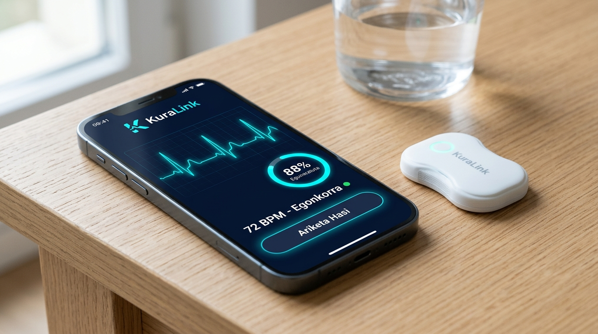

Osasun tele-zaintza adimentsua gailu medikoen eta pazienteen artean.
KuraLink Health Technologies gailu mediko eramangarriak eta osasun-sistemak bateratzen dituen plataforma digital aurreratua da. Sentsore biomedikoak zero-touch bidez sinkronizatzen ditu, seinale fisiologikoak adimenez iragazten ditu eta ospitaleko historian (Osabide Global / HL7 FHIR) zuzenean txertatzen da, ospitaleratzeak %35 murriztuz.
%35
Ospitaleratze Murrizketa
%88
Ariketen Atxikimendua
MDR IIa
CE Homologazio Klinikoa

BioPatch BLE Sinkronizatuta
KuraLink Negozio Txosten Estrategiko Osoa
A4 formatuko txosten korporatiboa (5 orrialde, datu klinikoak, lehiaren matrizea eta finantza bideragarritasuna)
Erronka Soziosanitarioa eta Soluzio Teknologikoa
Osasun krisia, etxeko zaintza eza eta gailu adimendunen erantzun integrala
Biztanleriaren zahartze azkarrak (%23,5 baino gehiago 65 urtetik gora Euskadin) eta gaixo kronikoen gorakadak ospitaleak gainezka jarri dituzte. Etxera itzultzean ez dago jarraipen kliniko digitalizaturik, eta pazienteen %50ek errehabilitazio ariketak bertan behera uzten dituzte.
Biomedikuntza Ingeniaritzako jakintza (seinale fisiologikoak, EKG, biomekanika, MDR erregulazioa) eta DAM zikloko formazio teknikoa (Flutter, Android, iOS, BLE komunikazioa eta hodeiko datu-base enkriptatuak) uztartzen ditugu.
Kontsumo arrunteko wearableek (Fitbit, Apple Watch) ez dute balio medikorik diagnostikorako; eta ospitaleko makinak astunak eta garestiak dira. KuraLink-ek gailu eramangarri arinak eta software mediko homologatua (SaMD) bateratzen ditu.
B2B eta B2B2C: Osasun-sare publikoak (Osakidetza), ospitale eta klinika pribatuak (kardiologia, traumatologia, errehabilitazio zerbitzuak), mutuak eta aseguru-etxeak (IMQ, Sanitas, Mapfre).
Ospitaleratze errepikatuak %35 murrizten ditu, errehabilitazio epeak laburtzen ditu, medikuen gainkarga administratiboa txikitzen du eta etxeko zaintza seguru, automatiko eta fidagarri bihurtzen du.
Ospitaleek ohe-kostuetan milaka euro aurrezten dituztelako eta arrisku kliniko larriak aldez aurretik saihesten dituztelako (ROI garbia: 1 euro inbertituta, 3,4 euro aurrezten dira kostu soziosanitarioetan).
Misioa, Bisioa eta Baloreak
Enpresaren identitatea, helburuak eta oinarrizko jokabide-arau etikoak
"Ingeniaritza biomedikoa eta software multiplataforma adimenduna uztartzea, pazienteen zaintza eta errehabilitazioa ospitaleko hormetatik harago eramateko, osasun-arreta irisgarri, pertsonalizatu eta fidagarri bat bermatuz."
Laburra, inspiratzailea, originala eta merkatuko behar errealari zuzendua.
"2030erako Hego Euskal Herrian eta Europan osasun digitaleko eta tele-monitorizazioko erreferente nagusia bihurtzea, gailu medikoen eta sistema klinikoen arteko zubirik seguruena eraikiz."
Etorkizunera proiekzio argia, errealista eta inpaktu sozial handikoa.
Balio Estrategikoak (Sinesgarriak, Koherenteak eta Beteak):
Ebidentzia klinikoan eta MDR (EB 2017/745) araudi medikoan oinarritua.
Zero-Touch UI/UX diseinua adineko pertsona eta senideentzat irisgarria izateko.
Datuen babes maximoa (GDPR, ENS Altua eta muturreko enkriptazioa).
Basque Health Cluster, BioGipuzkoa eta medikuekin ko-diseinua.
Target (Xede Publikoa)
B2B2C segmentazio integrala: 4 aldagai nagusiak eta ezaugarriak
- Demografikoak: 50-85 urte bitarteko pertsonak (bihotzeko gaixoak, iktus ostekoak edo ebakuntza osteko errehabilitazioa). Gizonezko eta emakumezkoak (%50/%50).
- Geografikoak: Euskadi eta Nafarroa (hiriguneak zein landa-eremuak, non ospitalera joatea neketsuagoa den).
- Psikografikoak: Etxean segurtasunez bizi nahi dutenak, independentzia maite dutenak baina babes medikoa galdu nahi ez dutenak.
- Jokabidezkoak: Aldizkako neurketak (tentsioa, EKG) edo errehabilitazio ariketak etxean erraz bete nahi dituztenak.
- Demografikoak: Ospitaleetako Zuzendari Medikoak, Berrikuntza Buruak (CIO/CMIO), Zerbitzu Buruak (40-62 urte).
- Geografikoak: Osakidetza, IMQ, Poliklinika Gipuzkoa, Quironsalud, Matia Fundazioa.
- Psikografikoak: Kalitate kliniko handiena eta zentroaren efizientzia ekonomikoa bilatzen duten liderrak.
- Jokabidezkoak: Alerta-nekea (alarm fatigue) ekiditea eta pazienteen birsartzeak %35 murriztea bilatzen dutenak.
Balio Proposamena eta Lehiaren Konparaketa
Zergatik aukeratuko du osasun-sistemak KuraLink alternatiben aurrean?
| Ezaugarri Teknikoa | Kontsumoko Wearableak (Fitbit, Apple) | Ospitaleko Makina Zaharrak | KuraLink SaMD Plataforma |
|---|---|---|---|
| MDR / CE Marka Medikoa | EZ (Fitness Maila) | BAI | BAI (SaMD Klasea IIa) |
| Etxeko Mugikortasuna | BAI | EZ (Oheari lotuta) | BAI (Zero-Touch BLE) |
| Multiplataforma (App + Web) | Mugatua | EZ (Itxia) | BAI (Flutter + Web) |
| Osabide / FHIR Integrazioa | EZ | Oso zaila eta garestia | BAI (Jatorrizko FHIR API) |
| Adinekoentzat Erabilerraztasuna | Konplexua | Teknikaria behar du | BIKAIN (Piztu eta prest) |
Marka: KuraLink
Teoria dokumentuko 4 irizpideak eta identitate korporatiboa
1. Gogoratzeko erraza
3 silaba sendo eta garbiak: Ku-ra-Link. 8 letra, indartsua eta inpaktu handikoa.
2. Ahoskatzeko erraza
Idazten den bezala ahoskatzen da euskaraz, gaztelaniaz zein ingelesez.
3. Jarduerarekin lotua
Kura (sendatzea/zaintza) + Link (multiplataforma konexio teknologikoa).
4. Bereizlea
Euskal nortasuneko sustraiak baina autoritate zientifiko unibertsala.
Paziente Ataria, EKG Telemetria eta Ariketak
MDR IIa eta GDPR bidez babestutako eremu klinikoa (Saio-hasiera beharrezkoa)
Pazientearen Datu Klinikoak eta Telemetria Babestuak
Datu medikoen segurtasun araudia (GDPR / ENS Altua) eta MDR IIa homologazioa betez, pazientearen fitxa pertsonala, denbora errealeko EKG telemetria eta errehabilitazio ariketak ikusteko, mesedez hasi saioa zure kontuarekin.
Ospitale eta Kliniken ROI Kalkulagailua
Zenbat diru aurrezten du osasun-zentro batek KuraLink tele-monitorizazioa ezartzean?
Merkatuaren eta Lan Munduaren Azterketa Zientifikoa
Euskadiko eta Europako errealitate soziosanitarioaren datu estatistikoak
%23,5+
Euskadiko Zahartze Tasa
Eustaten arabera, Euskadiko 65 urtetik gorako herritarrak %23,5 dira, eta zahartze-indizea 160tik gorakoa da (100 gazteko 160 adineko).
%77
Gaixo Kronikoen Gastua
Euskal osasun-gastu publikoaren %77 gaixotasun kronikoen (arazo kardiakoak, arnasketa, diabetesa) arretara bideratzen da.
%17,8
SaMD Merkatuaren CAGR
Software as a Medical Device (SaMD) merkatu globalak %17,8ko urteroko hazkunde metatua du 2024-2030 epean.
Euskadin bioosasunaren sektoreak 100 enpresa eta erakunde baino gehiago biltzen ditu (Tecnalia, Vicomtech, BioGipuzkoa, BioBizkaia, unibertsitateak eta Osakidetza). Sektoreak Euskadiko BPGaren %2 baino gehiago ordezkatzen du eta 10.000 langile kualifikatu baino gehiago ditu.
Arrakala Profesionala: Ingeniari biomediko hutsak kode multiplataforma aurreratua (Flutter, Android, iOS, Cloud) falta du; eta programatzaile hutsak seinale biologikoen zarata eta MDR araudi klinikoa ez ditu ezagutzen. Profil hibridoak (DAM + Biomedikuntza) merkatuaren gabezia larri hori konpontzen du.
Marka, Identitate Bisuala eta Enpresaren Irudi Errealak
KuraLink Health Technologies: Diseinu sistema, logotipo bektorialak eta Miramongo egoitza
Logotipo Korporatibo Bektoriala (SVG)
'K' letra geometrikoa + EKG bihotz-taupadaren uhina + IoT konexio nodoak
App Ikonoa / Isotipoa (SVG)
Mugikorrerako aplikazio ikonoa (Android eta iOS formatuan)
Miramongo I+G Laborategia eta Egoitza
Gipuzkoako Parke Zientifiko eta Teknologikoan kokatuta (Donostia). Ingeniari biomedikoak eta DAM multiplataforma garatzaileak elkarrekin lanean.
KuraLink Mugikorreko App-a & BioPatch Eramangarria
Pazientearen gela edo etxeko ingurunean sentsorea bularrean jantzi eta smartphonean telemetria automatikoki bistaratzen da.
Pazientearen Etxeko Tele-Zaintza (Mikel Iturbe, 68 urte)
Egoera erreala: gaixoa bularrean BioPatch eramaten eta mugikorrean bere osasun-egoera kontsultatzen, Osakidetzako osasun-profesionalaren bertako jarraipen klinikoarekin.
Kolore Korporatiboen Diseinu Sistemako Tokenak (Figma Tokens):
Zorroztasun zientifikoa, datu medikoen babesa eta sendotasun korporatiboa.
Multiplataforma softwarearen berrikuntza, interfaze klinikoak eta konfiantza.
EKG bihotz-pultsu bitala, osasuna, errekuperazioa eta BLE konexio aktiboak.